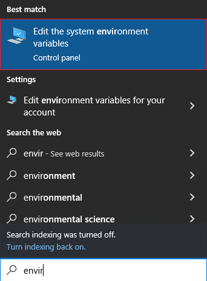
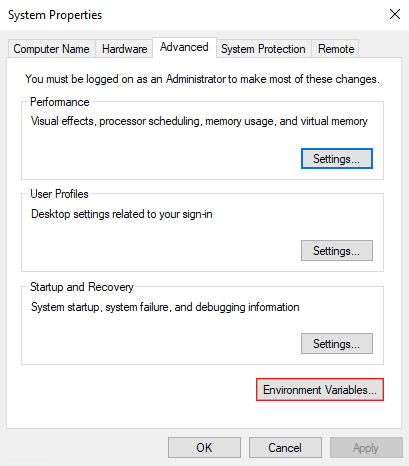
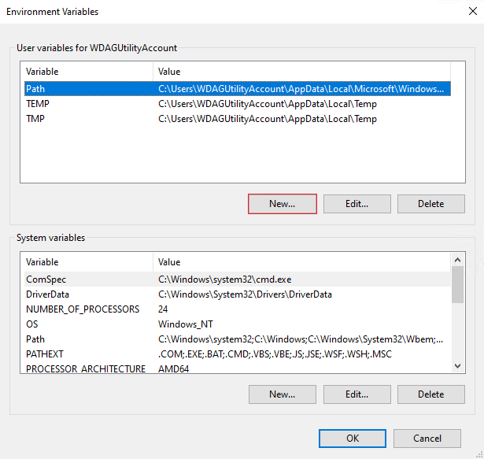
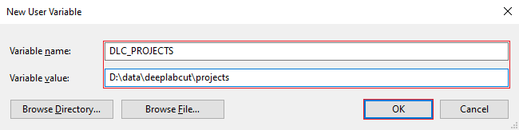

Configuration#
This section covers how to configure the software to support your environment once the backend has been downloaded. The backend can be configured in two ways, using environment variables, however, is preferred for more permanent installations.
Options#
With each setup method, you are able to configure the following variables.
| Option | Description | Default |
|---|---|---|
| Projects | The file system path to the directory containing your DeepLabCut projects. | "backend/tests/testdata" |
| Frame Format | The Python formatting string that dictates how the filename is derived from the frame number. | "img{:04}.png" |
| Token | An access token used to protect the backend from unauthorised access, it should only be shared with authorised parties and should be used alongside HTTPS encryption. For more advanced authentication strategies a third-party software such as Authelia should be used. | None |
| Host | The address the webserver is bound to, defaults to local machine only, set to 0.0.0.0 to allow access from the local network. |
"127.0.0.1" |
| Port | The port the webserver is bound to, this may need to be changed to avoid conflicts with other software that is may already be using that port. | 8000 |
| SSL Certfile | The SSL certificate file | None |
| SSL Keyfile | The SSL certificates private key file | None |
Using Command-line Arguments#
Open a terminal and navigate to the location of the downloaded binary, on Windows you can use
the Command Prompt or PowerShell, then to see a list of the available command-line arguments
run ./<binary> --help, replace <binary> with the name of the executable file you
downloaded, for Windows users this should be dlc-webui.exe.
The main argument you need to configure is --projects, which as mentioned in the table
above should point to the location where your DeepLabCut projects are stored.
All options can be configured using command-line arguments. To derive the command line
argument name, convert the name to lowercase, replace spaces with dashes, and add the prefix
--.
Frame Format frame-format --frame-format
The other options converted to command-line arguments are --projects, --token, --host, --port, --ssl-certfile, and --ssl-keyfile.
Below are some examples of how to run and configure the backend using command line arguments.
$ .\dlc-webui.exe --help
usage: dlc-webui [-h] [--projects PATH] [--frame-format FORMAT] [--host HOST] [--port PORT] [--token TOKEN]
[--ssl-certfile PATH] [--ssl-keyfile PATH]
options:
-h, --help show this help message and exit
--projects PATH path to directory containing your DLC projects
--frame-format FORMAT
formatting string for the name of extracted frames (default: img{:04}.png)
--host HOST bind the server to this address (default: 127.0.0.1)
--port PORT bind the server to this port (default: 8000)
--token TOKEN token used to secure the backend from unauthorised access
--ssl-certfile PATH path to SSL certificate
--ssl-keyfile PATH path to SSL certificates private key
.\dlc-webui.exe --host 0.0.0.0 --port 9292 --projects '/path/to/projects'
Using Environment Variables#
Environment variables can be configured in two ways, they can be configured globally on a
system level, or with a .env file located next to the binary.
All options can be configured using environment variables. To derive the environment variable
name, convert the name to uppercase, replace spaces with underscores, and add the prefix
DLC_.
Frame Format FRAME_FORMAT DLC_FRAME_FORMAT
The other options converted to environment variables are DLC_PROJECTS, DLC_TOKEN,
DLC_HOST, DLC_PORT, DLC_SSL_CERTFILE, and DLC_SSL_KEYFILE.
Configure with Windows#

First, you will need to open the windows search, and search for "environment", then select the entry called "edit the system environment variables"

In the next window click the button called "Environment Variables”

It will then show you a window with all the currently declared environment variables, click the “New…” button to create a new environment variable.
Finally, you will be presented with a dialog where you can enter the name of the environment variable and the value you want to assign.

Configure with a .env file#
To use the dotenv file method you will need to create a file named .env next to the
executable used to run the backend. Open the file with your preferred editor, notepad is
sufficient, and add the environment variables you want to configure. A sample file is distributed
with the source code, containing the following. See this source for more information on the
format of dotenv files. This file takes precedence over globally configured environment
variables.
# The file system path to the directory containing
# your DeepLabCut projects.
DLC_PROJECTS="/path/to/projects"
# The Python formatting string that dictates how the
# filename is derived from the frame number.
DLC_FRAME_FORMAT="img{:04}.test.png"
# To enable an environment variable remove '# ' from the beginning of
# the line with a "DLC_*" environment variable.
# The file system path to the directory containing
# your DeepLabCut projects.
# DLC_PROJECTS=".../projects"
# The Python formatting string that dictates how the
# filename is derived from the frame number.
# DLC_FRAME_FORMAT="img{:04}.png"
# An access token used to protect the backend from unauthorised access,
# it should only be shared with authorised parties and should be
# used alongside HTTPS encryption.
# DLC_TOKEN="<token>"
# Restrict access to current machine (default)
# DLC_HOST="127.0.0.1"
# Allow access from devices on the local network
# DLC_HOST="0.0.0.0"
# The port the webserver is bound to, this may need
# to be changed to avoid conflicts with other software
# that is may already be using that port.
# DLC_PORT="8000"
# If these are configured the webserver will use
# and require an HTTPS connection.
# DLC_SSL_CERTFILE="./cert.pem"
# DLC_SSL_KEYFILE="./key.pem"